Tenha a estrutura do BTG Pactual por trás da sua operação
Eleve o patamar do seu serviço. Ao integrar nosso ecossistema, existe a possibilidade de vinculação ao BTG Pactual, permitindo que você utilize a estrutura do maior banco de investimentos da América Latina para atender seus clientes.
Atenção: a aprovação e a vinculação ao BTG Pactual estão sujeitas à análise de critérios, regras e processos de compliance da instituição. A entrada na plataforma AUVP Advisors não garante este vínculo automaticamente.